Most mentorship-charity branding reads as either clinical NGO (blue gradients, stock photography) or twee and childish — neither builds trust with a skeptical teenager or makes a mark a 16-year-old would actually wear. The brief I set myself: a mark that could hold up on a T-shirt, a tote bag, and stadium signage next to a real streetwear brand, without losing the warmth the mission needs.
- Two bears, not one — the mentor/mentee pairing made literal, not an abstract mark.
- Vintage collegiate script wordmark — borrows trust signals from varsity/athletics branding instead of typical charity sans-serif.
- Navy/cream base + one flexible accent colour, so each touchpoint (stadium, apparel, digital) can feel distinct without breaking the system.
- Applications chosen to mirror real culture-brand rollouts (box truck, stadium takeover, staff lanyard) over standard nonprofit collateral like brochures.
This is self-initiated, so I have no feedback from a real mentee, mentor, or donor. I'd want to show the mark next to the audience's actual everyday brands to see if it reads as "for me" rather than "for my school," and check the two-bear mark stays legible at the smallest sizes — pin, app icon — before shrinking it further.
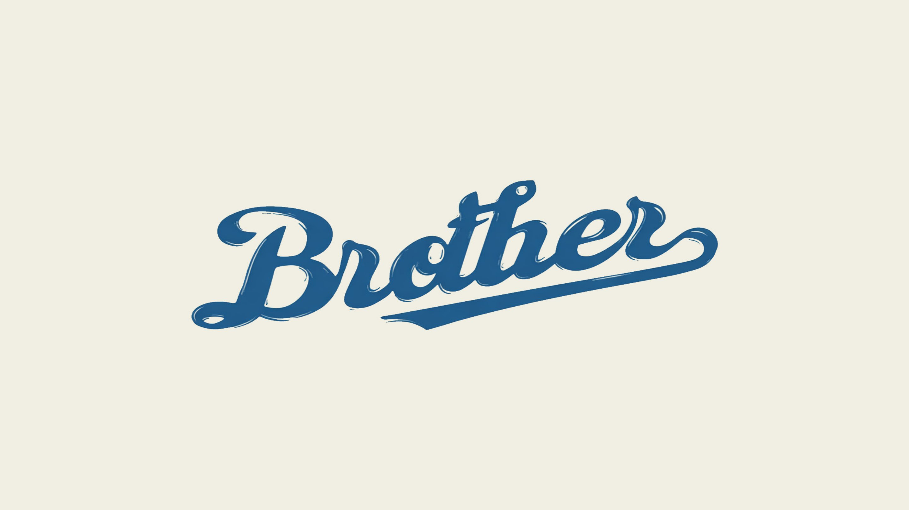
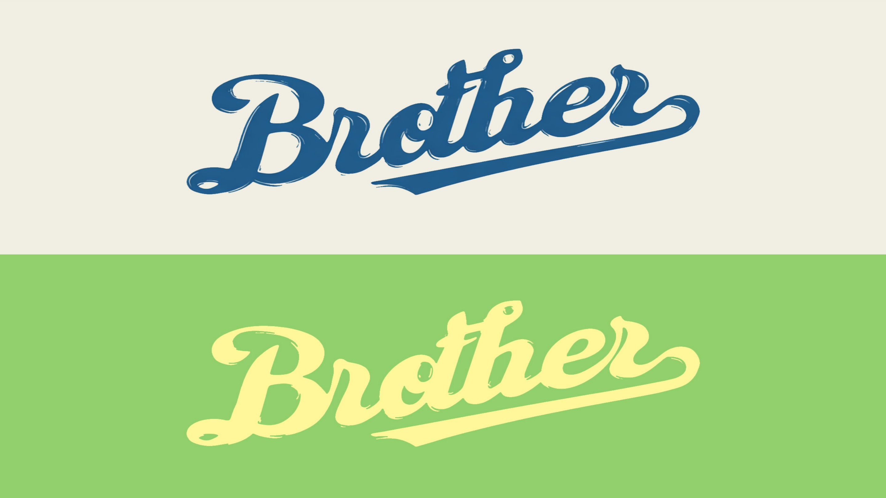
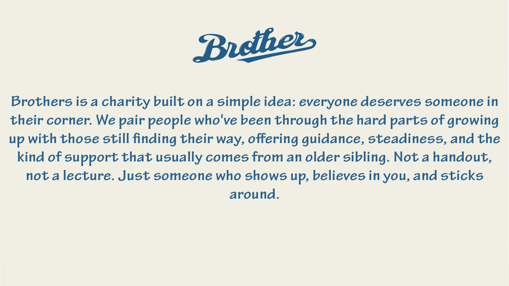
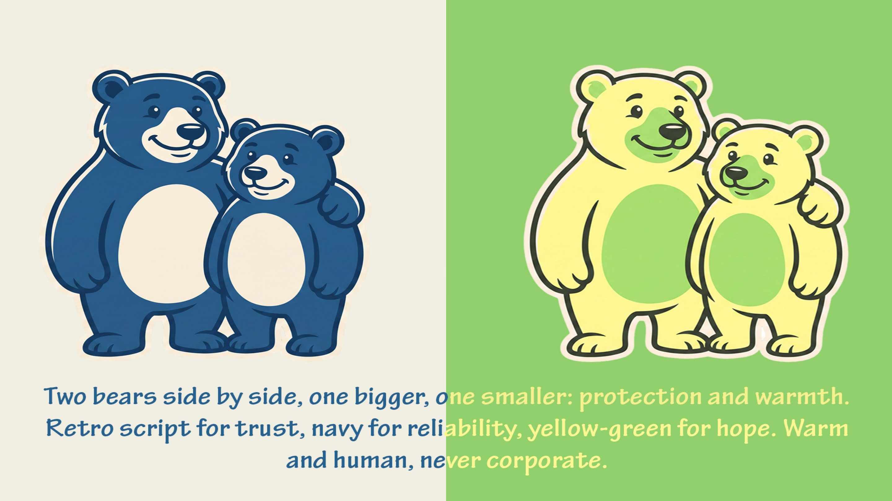
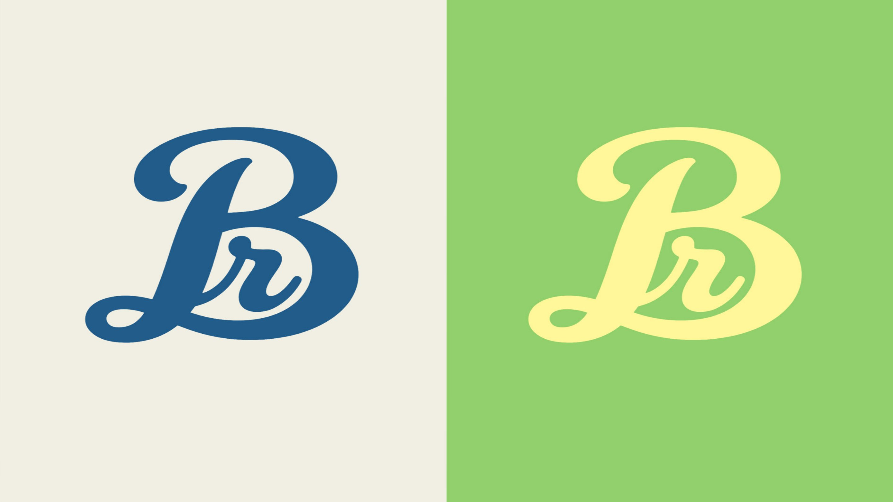
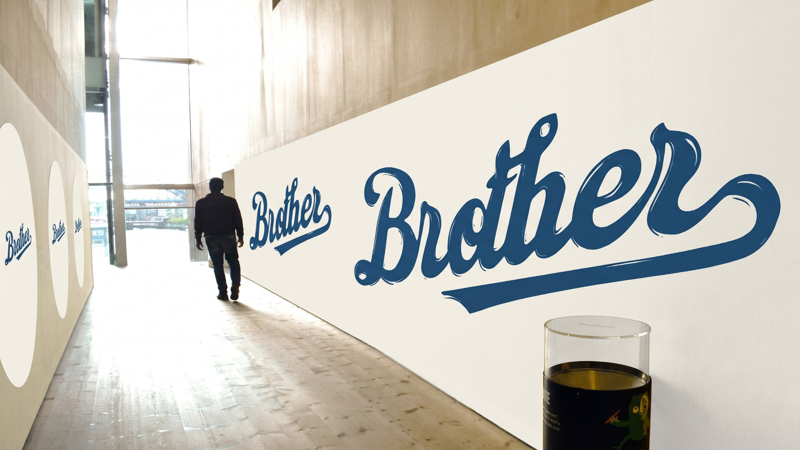

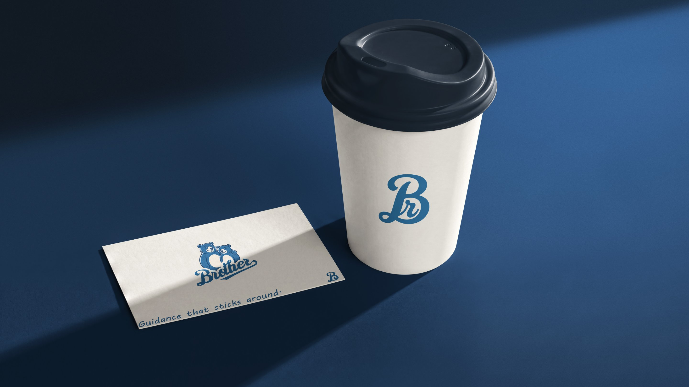
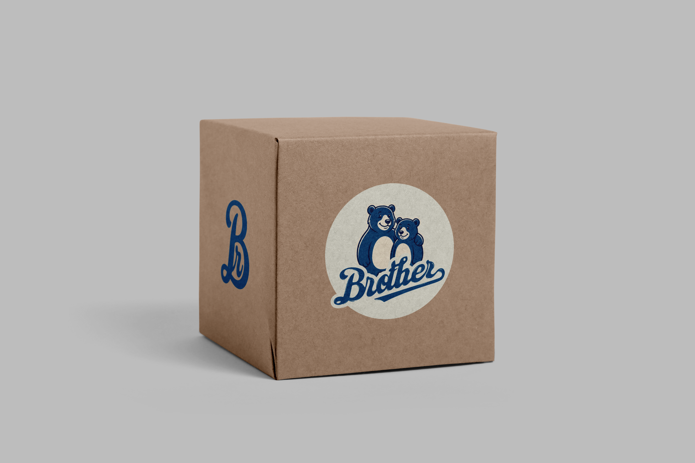


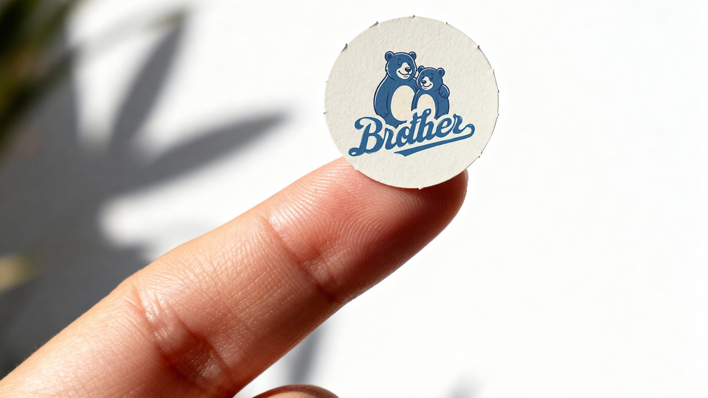


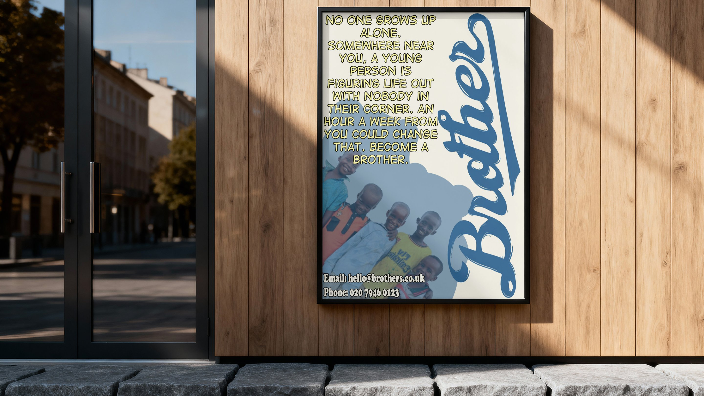
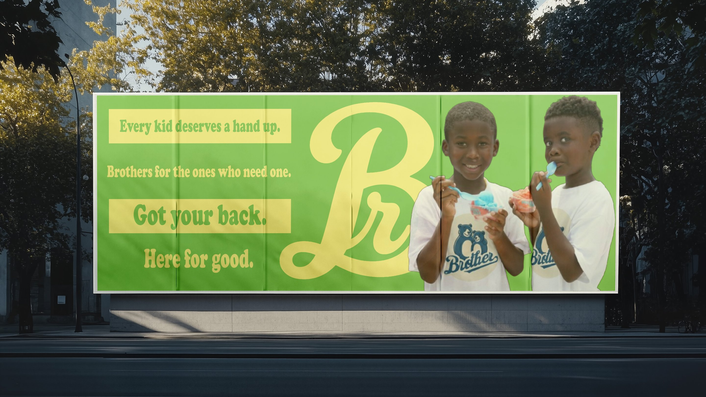


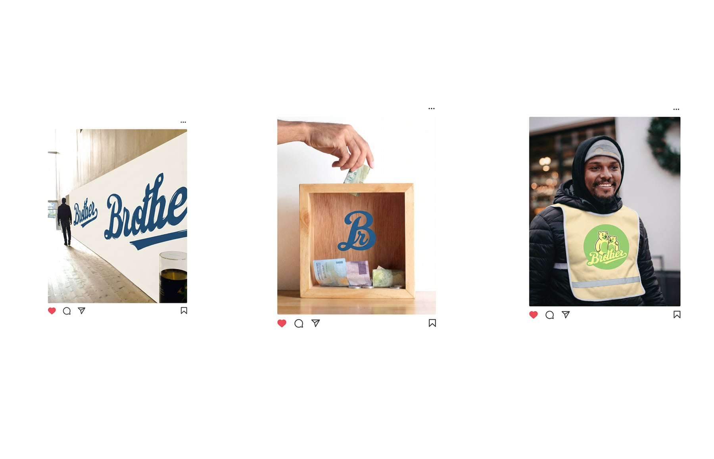
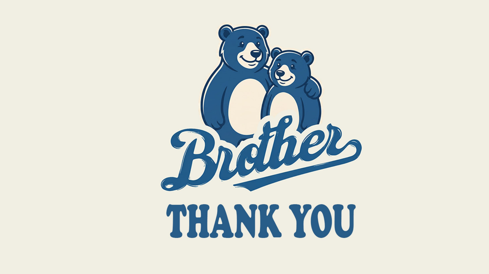